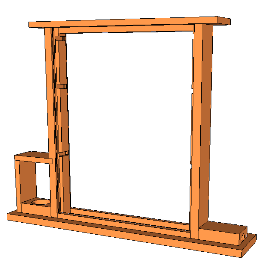

My Apiary
Summary.
Compendium of efforts and notes for things to try in my search for better yields in life. Michael Bush’s page remains, for me, the BEST reference and inspiration, though I have found local beekeeper clubs to be invaluable for help and advice.
My goals
- organic
- low-effort/time
- 4 Top Bar hives
- 2-4 Lang (traditional) hives
- 1 observation hive
- 300lb wildflower honey per year
- 100lb wax per year
- nucs?
Top Bar Hives
- A simplified way of beekeeping
- design parameters
- Kenyan style
- smaller frames, to avoid breakage
- proper bee space
- simple stand, at easily accesible height
- handles rest on 2 sawhorses
- can handle 2 hives at once
- hang from tree?
- handles rest on 2 sawhorses
- has proper entrance and ventilation
- top bars use triangular comb guide, nailed on
- baggie feeding of honey to get them started


Feral Bees
- use bait hives with pheremone to catch
- also catches my own swarms
- use nuc, hung from clearly visble tree branch, 10+ ft up, facing south
- Practice Bee lining
- Need a special box
Observation hive
- clear tubing entrance
- jar feeder
- 3 standard frames
- 3 stacked glass plates for sides
- screened top for ventilation
- frames put in horizontally, after glass plates have been slid up and out
- Can use top bars or frames
- groove for light blockers outside of glass grooves
- use cardboard
- tape “life cycle of bees” posters (brushy mountain bee supply) to cardboard

IPM for mites (in order)
- natural cell sizes
- takes 2 generations to regress the size of bees
- foundationless frames with triangular comb guide nailed on
- this leads to comb being built all over the place, for it to work either need frequent checks to encourage correct comb or frames already drawn on either side of empties
- do “shakedowns”
- hygenic-strain queen replacements
- includes feral bees?
- screened bottom boards
- drone brood culling
- mite-away II
Harvesting
- double-pass filter system in 5-gallon buckets
- cut raw comb from frames and put right into filter bucket
- harvest often
Equipment
Have
- 5 deep boxes with frames and permacell
- 1 KTBH box and frames
- 1 nuc box set out with pheramone as bait hive
- 1 box with bee escapes, for harvesting frames
- 1 hive tool
- razor blades to open baggie feeders
- 2 screened bottom boards
- bee brush
- super smoker
- self-igniting propane torch
- spray bottle loaded with water (sugar syrup always ferments)
- queen muff
- queen catcher hair clip
- frame-grabber / pry bar
- jacket veil and full suit veil
- 2 pair elbow length bee gloves
- migratory style top covers
- helps with winter ventilation
- good for top entrances
- 2 rock pallet platforms for stand/table
- liquid benadryl (for my non-systemic allergic reactions, take with Tylenol)
- silicone candle molds
- crush and strain buckets
- silicone baking pan for melting down wax in
Still need
- another silicone pan for melting wax in, preferably that can pour easier
- Queen marker
- Observation hive
- tape measure for checking cells sizes
- a camera (don’t use cell phone! Ack!)
- mite sticky boards
- Lang hive to TBH conversion frames
- More TBHs and frames (but a sturdier design and simpler stand)
Black cloth to cover some frames
Old Beekeeping Records
Hives
- Hive 1
- lang started 5/06 from a nuc from Mike at Honey Hill Orchard
- located over by silo, full exposure
- Mite away II
- 5/2006
- Died winter 2007 (Too exposed, not wrapped?)
- Hive 2
- lang started 6/07 from nuc from Mike at Honey Hill Orchard
- located on east side of barn, protected from prevailing winds
- built cross comb in top box (of 3) with starter strips, fixed 7/07
- quick buildup
- Hive 3
- lang started 6/07 from nuc from Mike at Honey Hill Orchard
- located on east side of barn, protected from prevailing winds
- threw swarm on 9/17/07
- built cross comb in top box (of 2) with starter strips, fixed 9/18/07
- Hive 4
- KTBH started 6/07 from shakedown from hive 1 and a hygenic queen from Mike at Honey Hill Orchard
- located with hive 1
- Died winter 2007 (not enough stores)
Seasonal Summaries
2006 season
Good yield, probably no swarms, got out to inspect infrequently.
2007 season
Despite a great honey year, poor yield, what I did get crystallized very quickly. Bees were viscious. I think they swarmed early and often, and the new queens picked up bad genetics.
Top Bar hive and many candles were good points.
Tried many new management scenarios, and some worked (feeding honey, TBH, shakedowns), some didn’t (foundationless frames, nuc boxes for capturing swarms, frame harvester)
2008 season
Pulled about 15# from Hive 3, but they are mean. Need to figure out how to find queens so I can replace them, need a better way of harvesting frames and clearing bees out, need to reduce number of lang hives, and do a shakedown to get another Top Bar Hive.
Need to move all hives somewhere I don’t have to mow and is not so exposed (woods?)
2009 season
Never got called back by Mike from Honey Hill Orchard, so never got new nucs. After some knocking on Hive 2 early in the season, I decided it was dead, but got a pleasant surprise in October when I opened it up to look at what was left. Not only a very strong 3 boxes of bees, but they were not hot anymore, so I was able to pull 5 frames for a 20# harvest.
Foundationless frames work well as long as they are placed between drawn frames. Still working on regressing bee size, need to pull frames out of other 2 boxes next year and get everthing switched over to foundationless frames. Also need to make some to bars to go in place of frames to start bars for the TBHs. Hive 3 had a small cluster of bees in it. so I took the bottom 2 boxes full of detritus off, and gave them a new screened bottom board and reduced bottom entrance to see if they can pull through. I should have given them 3 of the frames of honey I harvested.
Turns out that side of the barn is a good spot for keeping hives, gets early sun and protection from wind, good access to water and forage, and is out of path of people. to set this up right, though, I need to pull the hives away from the barn a little more so I can work from any side and snow and rain won’t hit it from the roof above. Also need some plastic and gravel down to keep weeds down.
I tossed the remnants of Hive 1 and 3 onto the burn pile, they were looking pretty nasty. Hive 4 needs to get burned, too, it has collapsed on itself. Things that worked this year: regressing to small cell size, foundationless frames, cracking top for better winter ventilation.
Things needing work: storing equipment better, doing mite counts, switching over to TBH.
2010 season
I thought Hive 2 was going to make it, but they ran out of honey in April, and it was a cold spring. so Close.
I meant to try bee-lining, but never got the chance. I got a call in late season (October) to come get a swarm, but by the weekend they had froze out.
Things needing work: clear the brush out of the bee spot next to the barn, get a bee-lining box.